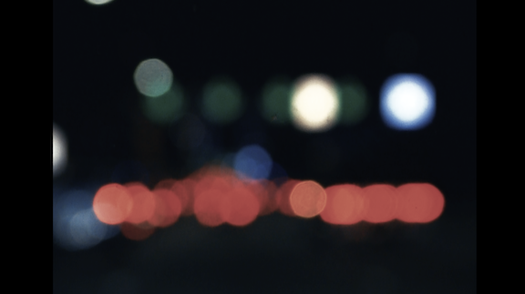

place des vosges
STUDIO | Video
I spent the afternoon in place des vosges. Here, I documented some of the people and buildings I saw that make this place so special.
see morebluebird
STUDIO | Bluebird

Some shots of an upcoming project I’ve been working on titled Bluebird. I started filming and documenting my life back in May to see if a story would come of it. This is my first time doing something like this so take it easy alright. Stay tuned these coming weeks.
read more